Changes in PRIMAP-hist v2.6.1_final compared to v2.6_final for Zambia
2025-03-19
Johannes Gütschow
Change analysis for Zambia for PRIMAP-hist v2.6.1_final compared to v2.6_final
Overview over emissions by sector and gas
The following figures show the aggregate national total emissions excluding LULUCF AR6GWP100 for the country reported priority scenario. The dotted linesshow the v2.6_final data.
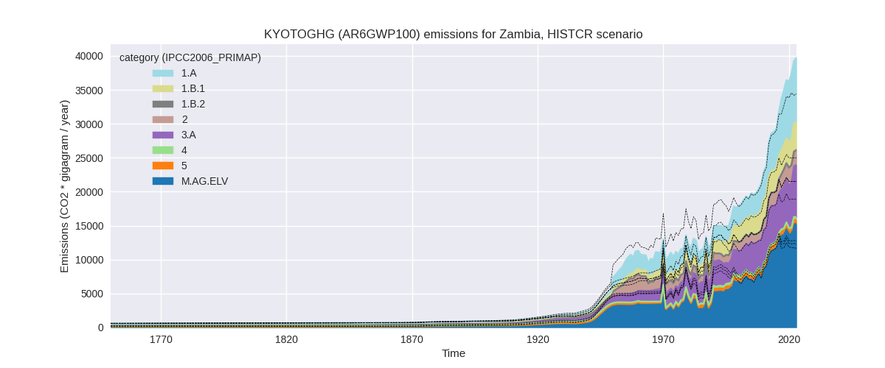
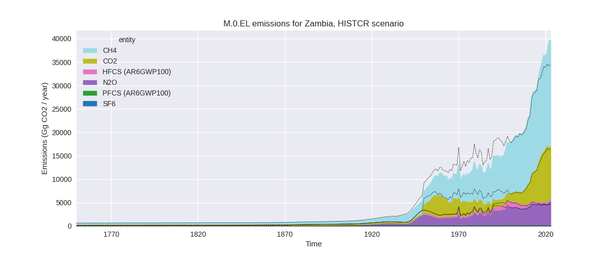
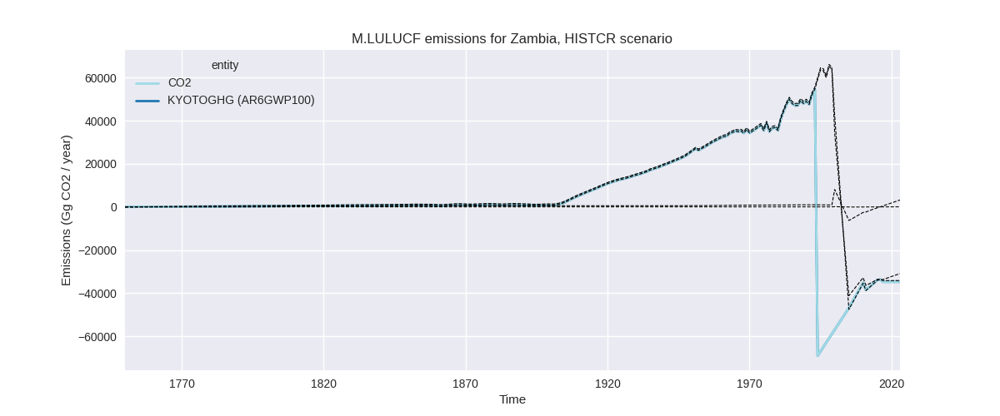
The following figures show the aggregate national total emissions excluding LULUCF AR6GWP100 for the third party priority scenario. The dotted linesshow the v2.6_final data.
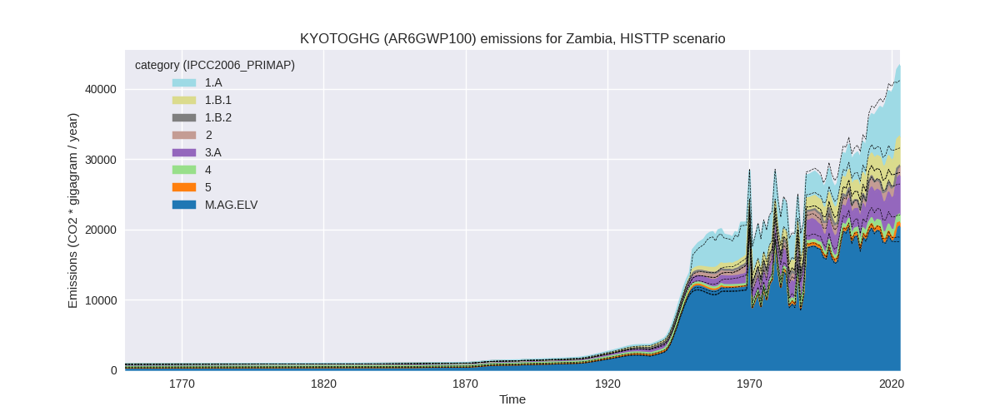
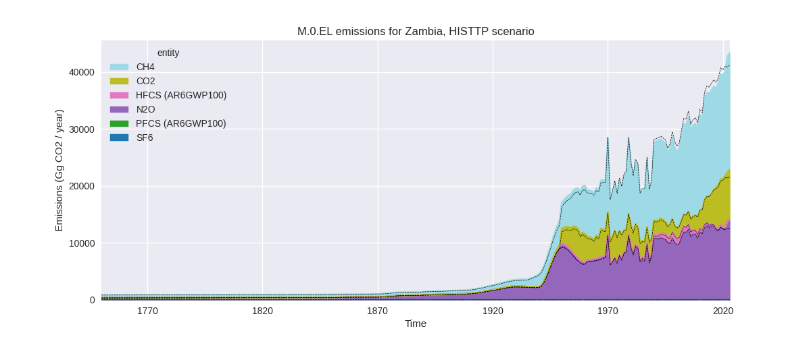
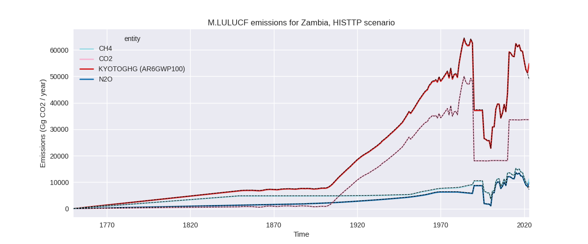
Overview over changes
In the country reported priority scenario we have the following changes for aggregate Kyoto GHG and national total emissions excluding LULUCF (M.0.EL):
- Emissions in 2023 have changed by 15.4%% (5316.34 Gg CO2 / year)
- Emissions in 1990-2023 have changed by -0.2%% (-46.37 Gg CO2 / year)
In the third party priority scenario we have the following changes for aggregate Kyoto GHG and national total emissions excluding LULUCF (M.0.EL):
- Emissions in 2023 have changed by 5.2%% (2136.47 Gg CO2 / year)
- Emissions in 1990-2023 have changed by -2.3%% (-749.21 Gg CO2 / year)
Most important changes per scenario and time frame
In the country reported priority scenario the following sector-gas combinations have the highest absolute impact on national total KyotoGHG (AR6GWP100) emissions in 2023 (top 5):
- 1: M.AG.ELV, CH4 with 2740.76 Gg CO2 / year (33.8%)
- 2: 3.A, CH4 with 1612.84 Gg CO2 / year (27.1%)
- 3: M.AG.ELV, N2O with 739.24 Gg CO2 / year (21.8%)
- 4: 1.B.1, CH4 with 629.34 Gg CO2 / year (18.2%)
- 5: 2, CO2 with -436.90 Gg CO2 / year (-16.7%)
In the country reported priority scenario the following sector-gas combinations have the highest absolute impact on national total KyotoGHG (AR6GWP100) emissions in 1990-2023 (top 5):
- 1: 1.A, CO2 with -206.31 Gg CO2 / year (-5.3%)
- 2: 1.B.1, CH4 with 171.07 Gg CO2 / year (6.6%)
- 3: M.AG.ELV, N2O with -157.56 Gg CO2 / year (-4.9%)
- 4: 3.A, CH4 with 112.33 Gg CO2 / year (2.5%)
- 5: M.AG.ELV, CH4 with 76.66 Gg CO2 / year (1.3%)
In the third party priority scenario the following sector-gas combinations have the highest absolute impact on national total KyotoGHG (AR6GWP100) emissions in 2023 (top 5):
- 1: 4, CH4 with -1984.17 Gg CO2 / year (-67.7%)
- 2: M.AG.ELV, N2O with 1262.67 Gg CO2 / year (11.6%)
- 3: 3.A, CH4 with 1089.19 Gg CO2 / year (25.6%)
- 4: M.AG.ELV, CH4 with 922.63 Gg CO2 / year (12.8%)
- 5: 1.B.1, CH4 with 629.34 Gg CO2 / year (18.2%)
In the third party priority scenario the following sector-gas combinations have the highest absolute impact on national total KyotoGHG (AR6GWP100) emissions in 1990-2023 (top 5):
- 1: 4, CH4 with -1278.33 Gg CO2 / year (-68.8%)
- 2: 1.B.1, CH4 with 171.07 Gg CO2 / year (6.6%)
- 3: 3.A, CH4 with 69.11 Gg CO2 / year (2.1%)
- 4: M.AG.ELV, N2O with 68.44 Gg CO2 / year (0.7%)
- 5: 1.A, N2O with 68.24 Gg CO2 / year (31.2%)
Notes on data changes
Here we list notes explaining important emissions changes for the country.
- No new country reported data has been included. Changes in the CR
time-series come from updated third party data (EDGAR, FAO) which is
used to extrapolate the country reported data and are mostly limited to
the latest years.
- The changes in pre-2000 emissions in the CR scenario are an exception. They have changed because a data point for 1994 has been included
- A change in M.AG.ELV for all years after 2016 comes from the harmonization which is uses trends if more than 5 years are added while it uses only the data points at the harmonization year if 5 or less years are added. The new FAO data adds 6 years while the older FAO data only added 5 years.
- In the TP scenario the changes are for similar sectors with the addition of a high reduction of waste CH4 emissions from EDGAR data.
Changes by sector and gas
For each scenario and time frame the changes are displayed for all individual sectors and all individual gases. In the sector plot we use aggregate Kyoto GHGs in AR6GWP100. In the gas plot we usenational total emissions without LULUCF.
country reported scenario
2023
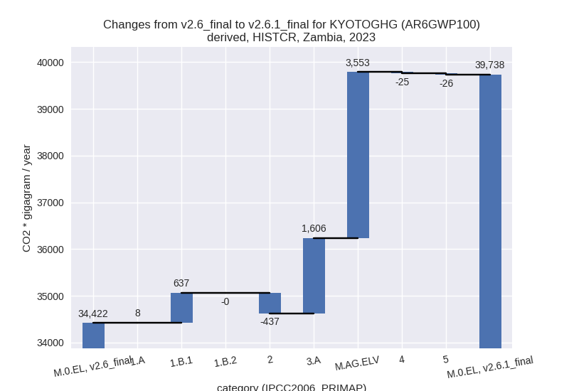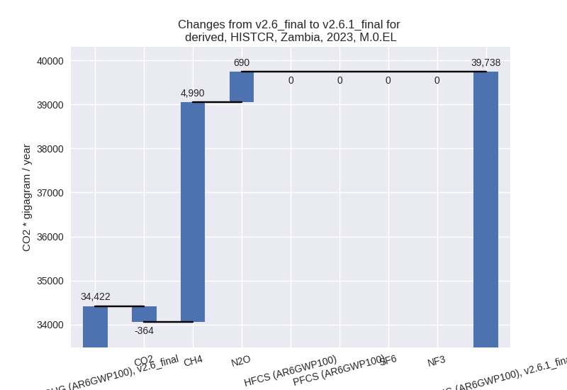
1990-2023
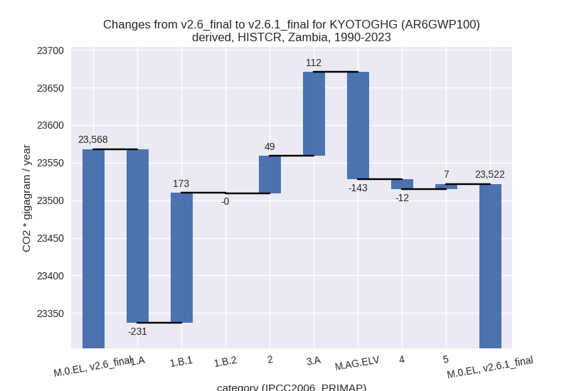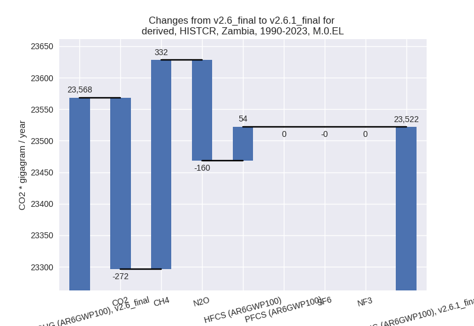
third party scenario
2023
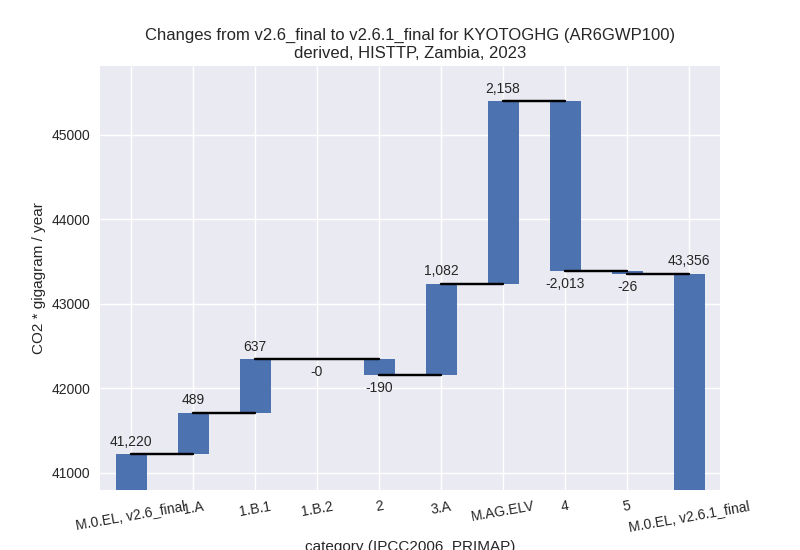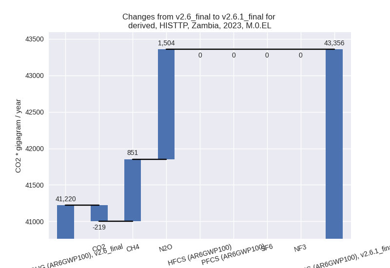
1990-2023
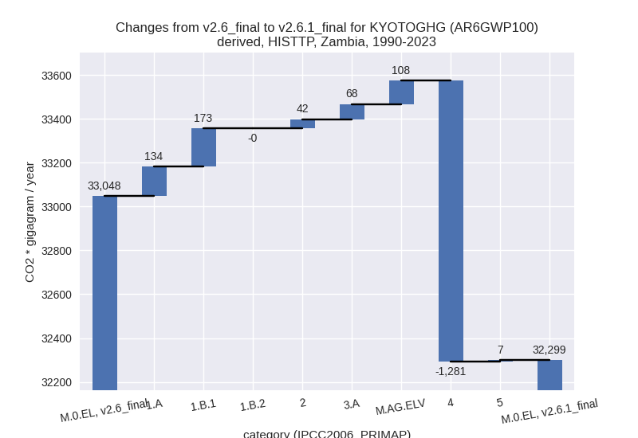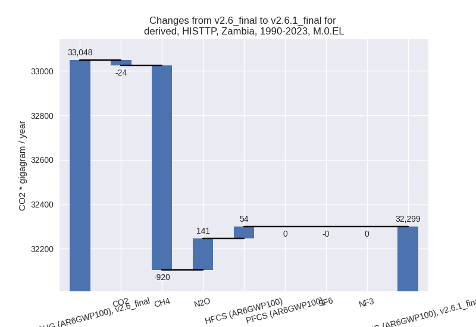
Detailed changes for the scenarios:
country reported scenario (HISTCR):
Most important changes per time frame
For 2023 the following sector-gas combinations have the highest absolute impact on national total KyotoGHG (AR6GWP100) emissions in 2023 (top 5):
- 1: M.AG.ELV, CH4 with 2740.76 Gg CO2 / year (33.8%)
- 2: 3.A, CH4 with 1612.84 Gg CO2 / year (27.1%)
- 3: M.AG.ELV, N2O with 739.24 Gg CO2 / year (21.8%)
- 4: 1.B.1, CH4 with 629.34 Gg CO2 / year (18.2%)
- 5: 2, CO2 with -436.90 Gg CO2 / year (-16.7%)
For 1990-2023 the following sector-gas combinations have the highest absolute impact on national total KyotoGHG (AR6GWP100) emissions in 1990-2023 (top 5):
- 1: 1.A, CO2 with -206.31 Gg CO2 / year (-5.3%)
- 2: 1.B.1, CH4 with 171.07 Gg CO2 / year (6.6%)
- 3: M.AG.ELV, N2O with -157.56 Gg CO2 / year (-4.9%)
- 4: 3.A, CH4 with 112.33 Gg CO2 / year (2.5%)
- 5: M.AG.ELV, CH4 with 76.66 Gg CO2 / year (1.3%)
Changes in the main sectors for aggregate KyotoGHG (AR6GWP100) are
- 1: Total sectoral emissions in 2022 are 13378.54 Gg
CO2 / year which is 34.1% of M.0.EL emissions. 2023 Emissions have
changed by 5.0% (644.76 Gg CO2 /
year). 1990-2023 Emissions have changed by -0.8% (-58.58 Gg CO2 / year). For 2023 the
changes per gas
are:
The changes come from the following subsectors:- 1.A: Total sectoral emissions in 2022 are 9231.36
Gg CO2 / year which is 69.0% of category 1 emissions. 2023 Emissions
have changed by 0.1% (8.04 Gg CO2 /
year). 1990-2023 Emissions have changed by -4.8% (-231.41 Gg CO2 / year). For
1990-2023 the changes per gas
are:
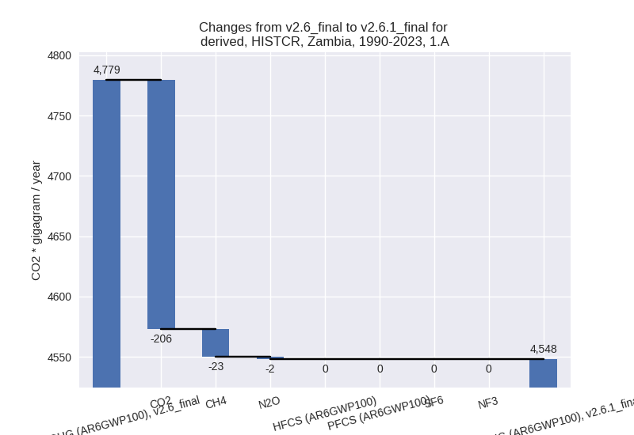
There is no subsector information available in PRIMAP-hist. - 1.B.1: Total sectoral emissions in 2022 are 4146.79
Gg CO2 / year which is 31.0% of category 1 emissions. 2023 Emissions
have changed by 18.2% (637.18 Gg CO2
/ year). 1990-2023 Emissions have changed by 6.6% (172.95 Gg CO2 / year). For 2023 the
changes per gas
are:
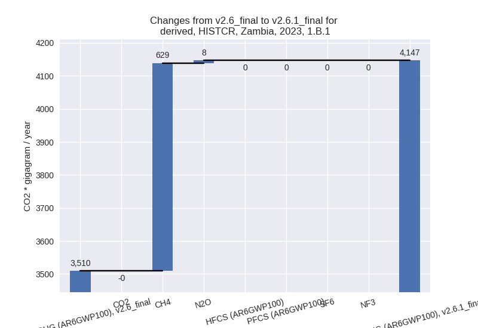
For 1990-2023 the changes per gas are:
There is no subsector information available in PRIMAP-hist. - 1.B.2: Total sectoral emissions in 2022 are 0.39 Gg
CO2 / year which is 0.0% of category 1 emissions. 2023 Emissions have
changed by -52.2% (-0.46 Gg CO2 /
year). 1990-2023 Emissions have changed by -3.2% (-0.12 Gg CO2 / year). For 2023 the
changes per gas
are:
For 1990-2023 the changes per gas are:
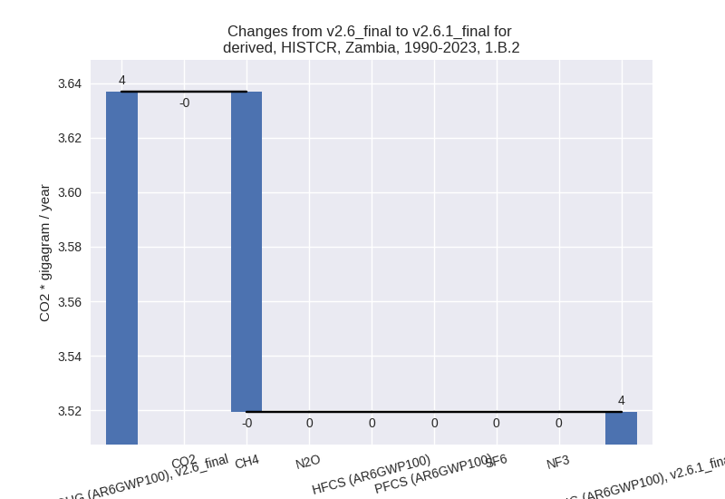
There is no subsector information available in PRIMAP-hist.
- 1.A: Total sectoral emissions in 2022 are 9231.36
Gg CO2 / year which is 69.0% of category 1 emissions. 2023 Emissions
have changed by 0.1% (8.04 Gg CO2 /
year). 1990-2023 Emissions have changed by -4.8% (-231.41 Gg CO2 / year). For
1990-2023 the changes per gas
are:
- 2: Total sectoral emissions in 2022 are 2177.33 Gg
CO2 / year which is 5.5% of M.0.EL emissions. 2023 Emissions have
changed by -16.7% (-436.90 Gg CO2 /
year). 1990-2023 Emissions have changed by 3.2% (49.46 Gg CO2 / year). For 2023 the
changes per gas
are:
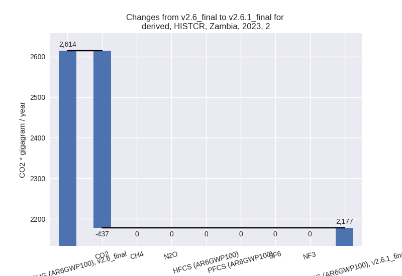
For 1990-2023 the changes per gas are:
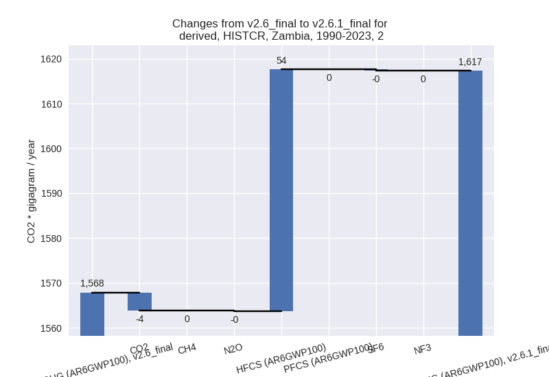 - M.AG: Total sectoral emissions in 2022 are 22618.65
Gg CO2 / year which is 57.6% of M.0.EL emissions. 2023 Emissions have
changed by 29.0% (5159.16 Gg CO2 /
year). 1990-2023 Emissions have changed by -0.2% (-31.47 Gg CO2 / year). For 2023 the
changes per gas
are:
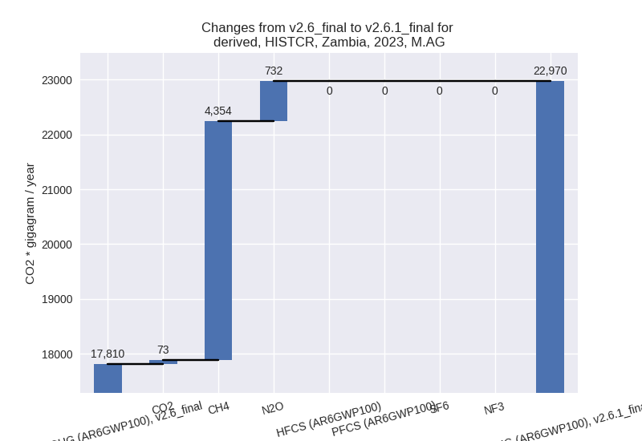
The changes come from the following subsectors:- 3.A: Total sectoral emissions in 2022 are 7425.68
Gg CO2 / year which is 32.8% of category M.AG emissions. 2023 Emissions
have changed by 26.2% (1605.75 Gg
CO2 / year). 1990-2023 Emissions have changed by 2.4% (111.57 Gg CO2 / year). For 2023 the
changes per gas
are:
For 1990-2023 the changes per gas are:
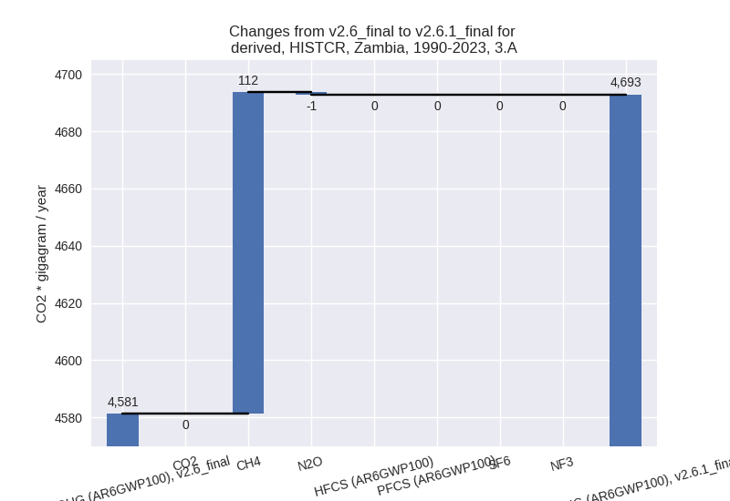
There is no subsector information available in PRIMAP-hist. - M.AG.ELV: Total sectoral emissions in 2022 are
15192.96 Gg CO2 / year which is 67.2% of category M.AG emissions. 2023
Emissions have changed by 30.4%
(3553.41 Gg CO2 / year). 1990-2023 Emissions have changed by -1.6% (-143.04 Gg CO2 / year). For 2023
the changes per gas
are:
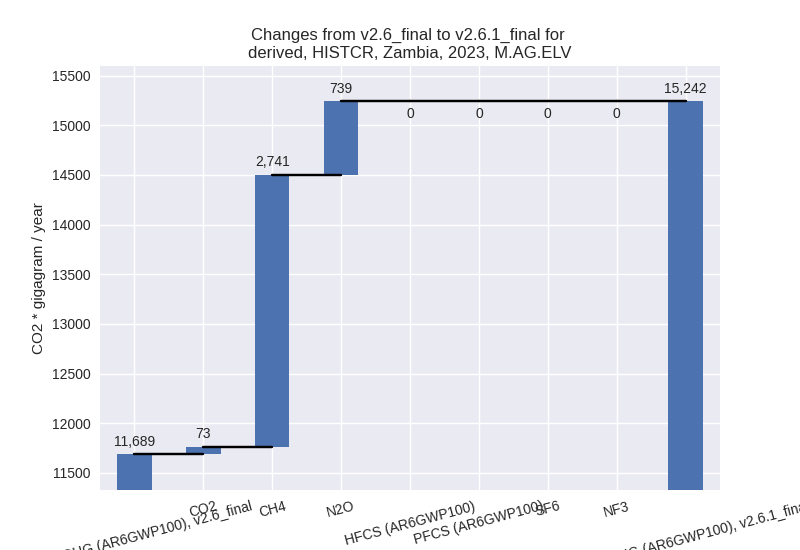
There is no subsector information available in PRIMAP-hist.
- 3.A: Total sectoral emissions in 2022 are 7425.68
Gg CO2 / year which is 32.8% of category M.AG emissions. 2023 Emissions
have changed by 26.2% (1605.75 Gg
CO2 / year). 1990-2023 Emissions have changed by 2.4% (111.57 Gg CO2 / year). For 2023 the
changes per gas
are:
- 4: Total sectoral emissions in 2022 are 414.00 Gg
CO2 / year which is 1.1% of M.0.EL emissions. 2023 Emissions have
changed by -5.5% (-24.85 Gg CO2 /
year). 1990-2023 Emissions have changed by -3.0% (-12.41 Gg CO2 / year). For 2023 the
changes per gas
are:
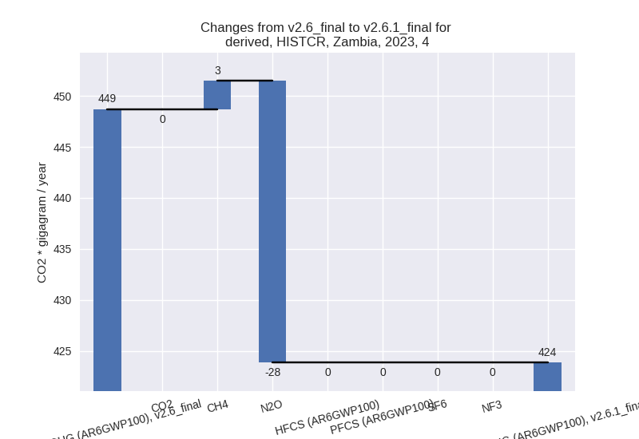
For 1990-2023 the changes per gas are:
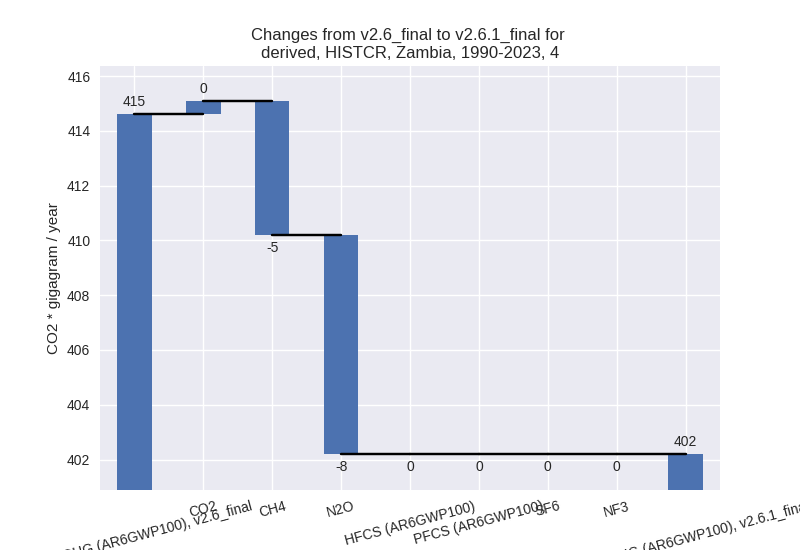 - 5: Total sectoral emissions in 2022 are 690.75 Gg
CO2 / year which is 1.8% of M.0.EL emissions. 2023 Emissions have
changed by -4.3% (-25.82 Gg CO2 /
year). 1990-2023 Emissions have changed by 1.2% (6.62 Gg CO2 / year). For 2023 the
changes per gas
are:
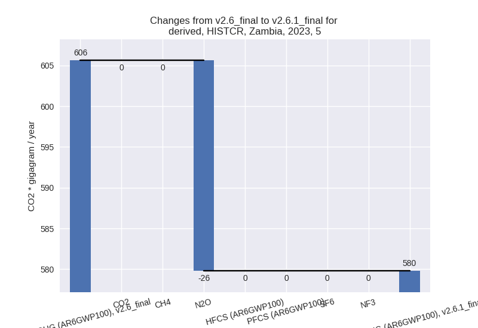
third party scenario (HISTTP):
Most important changes per time frame
For 2023 the following sector-gas combinations have the highest absolute impact on national total KyotoGHG (AR6GWP100) emissions in 2023 (top 5):
- 1: 4, CH4 with -1984.17 Gg CO2 / year (-67.7%)
- 2: M.AG.ELV, N2O with 1262.67 Gg CO2 / year (11.6%)
- 3: 3.A, CH4 with 1089.19 Gg CO2 / year (25.6%)
- 4: M.AG.ELV, CH4 with 922.63 Gg CO2 / year (12.8%)
- 5: 1.B.1, CH4 with 629.34 Gg CO2 / year (18.2%)
For 1990-2023 the following sector-gas combinations have the highest absolute impact on national total KyotoGHG (AR6GWP100) emissions in 1990-2023 (top 5):
- 1: 4, CH4 with -1278.33 Gg CO2 / year (-68.8%)
- 2: 1.B.1, CH4 with 171.07 Gg CO2 / year (6.6%)
- 3: 3.A, CH4 with 69.11 Gg CO2 / year (2.1%)
- 4: M.AG.ELV, N2O with 68.44 Gg CO2 / year (0.7%)
- 5: 1.A, N2O with 68.24 Gg CO2 / year (31.2%)
Changes in the main sectors for aggregate KyotoGHG (AR6GWP100) are
- 1: Total sectoral emissions in 2022 are 14059.62 Gg
CO2 / year which is 32.9% of M.0.EL emissions. 2023 Emissions have
changed by 8.6% (1125.98 Gg CO2 /
year). 1990-2023 Emissions have changed by 4.0% (307.09 Gg CO2 / year). For 2023 the
changes per gas
are:
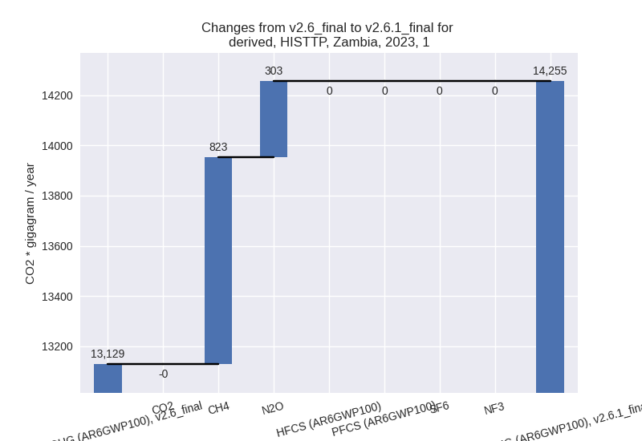
For 1990-2023 the changes per gas are:
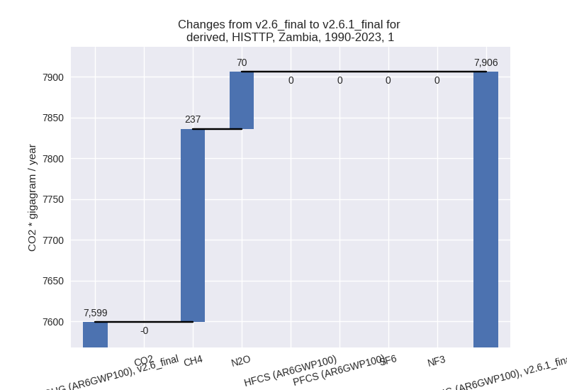
The changes come from the following subsectors:- 1.A: Total sectoral emissions in 2022 are 9912.43
Gg CO2 / year which is 70.5% of category 1 emissions. 2023 Emissions
have changed by 5.1% (489.26 Gg CO2
/ year). 1990-2023 Emissions have changed by 2.7% (134.25 Gg CO2 / year). For 2023 the
changes per gas
are:
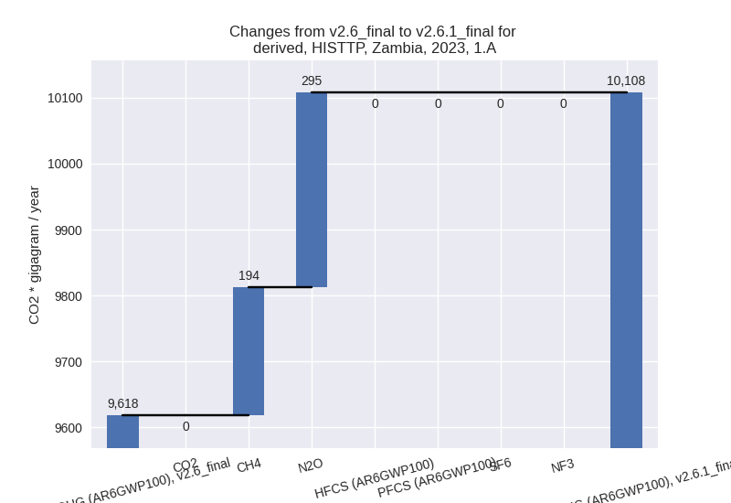
For 1990-2023 the changes per gas are:
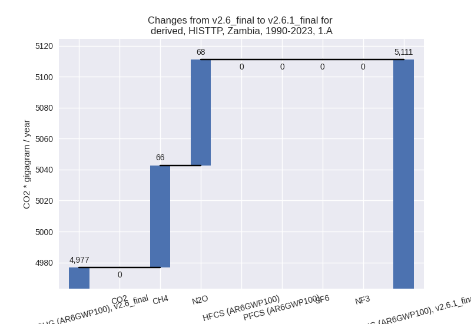
There is no subsector information available in PRIMAP-hist. - 1.B.1: Total sectoral emissions in 2022 are 4146.79
Gg CO2 / year which is 29.5% of category 1 emissions. 2023 Emissions
have changed by 18.2% (637.18 Gg CO2
/ year). 1990-2023 Emissions have changed by 6.6% (172.95 Gg CO2 / year). For 2023 the
changes per gas
are:
For 1990-2023 the changes per gas are:
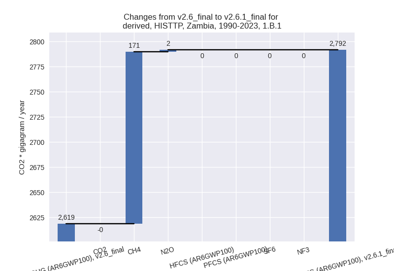
There is no subsector information available in PRIMAP-hist. - 1.B.2: Total sectoral emissions in 2022 are 0.39 Gg
CO2 / year which is 0.0% of category 1 emissions. 2023 Emissions have
changed by -52.2% (-0.46 Gg CO2 /
year). 1990-2023 Emissions have changed by -3.2% (-0.12 Gg CO2 / year). For 2023 the
changes per gas
are:
For 1990-2023 the changes per gas are:
There is no subsector information available in PRIMAP-hist.
- 1.A: Total sectoral emissions in 2022 are 9912.43
Gg CO2 / year which is 70.5% of category 1 emissions. 2023 Emissions
have changed by 5.1% (489.26 Gg CO2
/ year). 1990-2023 Emissions have changed by 2.7% (134.25 Gg CO2 / year). For 2023 the
changes per gas
are:
- 2: Total sectoral emissions in 2022 are 1418.65 Gg
CO2 / year which is 3.3% of M.0.EL emissions. 2023 Emissions have
changed by -11.8% (-190.37 Gg CO2 /
year). 1990-2023 Emissions have changed by 2.8% (42.17 Gg CO2 / year). For 2023 the
changes per gas
are:
For 1990-2023 the changes per gas are:
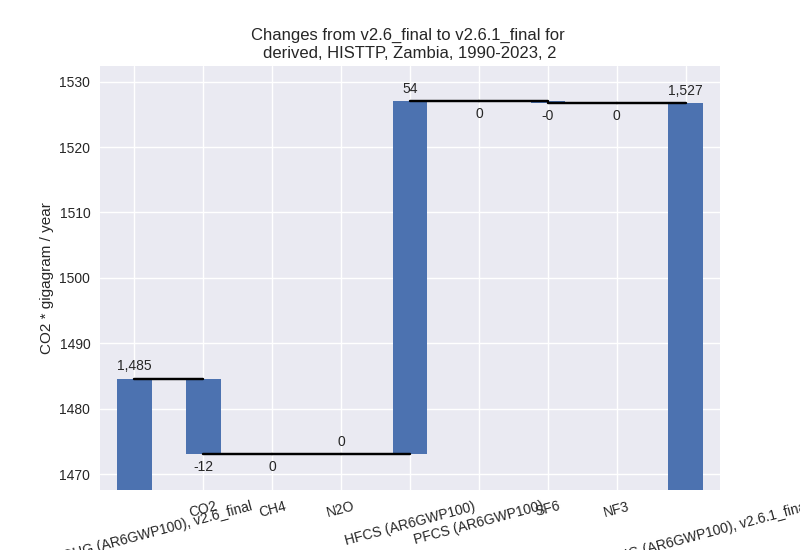 - M.AG: Total sectoral emissions in 2022 are 25460.57
Gg CO2 / year which is 59.6% of M.0.EL emissions. 2023 Emissions have
changed by 14.3% (3239.76 Gg CO2 /
year). 1990-2023 Emissions have changed by 0.8% (176.05 Gg CO2 / year). For 2023 the
changes per gas
are:
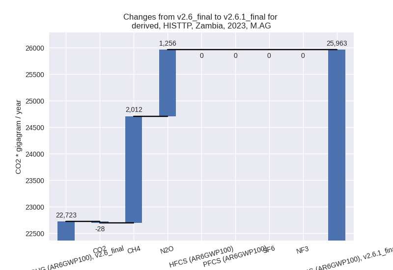
The changes come from the following subsectors:- 3.A: Total sectoral emissions in 2022 are 5295.19
Gg CO2 / year which is 20.8% of category M.AG emissions. 2023 Emissions
have changed by 24.4% (1082.09 Gg
CO2 / year). 1990-2023 Emissions have changed by 2.0% (68.36 Gg CO2 / year). For 2023 the
changes per gas
are:
For 1990-2023 the changes per gas are:
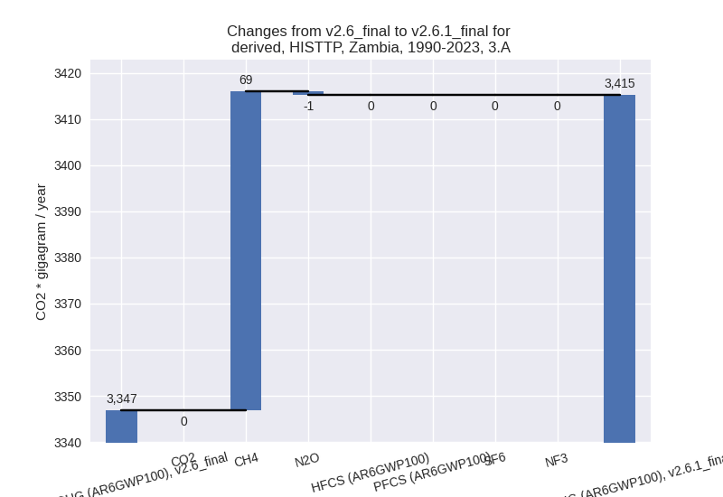
There is no subsector information available in PRIMAP-hist. - M.AG.ELV: Total sectoral emissions in 2022 are
20165.38 Gg CO2 / year which is 79.2% of category M.AG emissions. 2023
Emissions have changed by 11.8%
(2157.67 Gg CO2 / year). 1990-2023 Emissions have changed by 0.6% (107.69 Gg CO2 / year). For 2023 the
changes per gas
are:
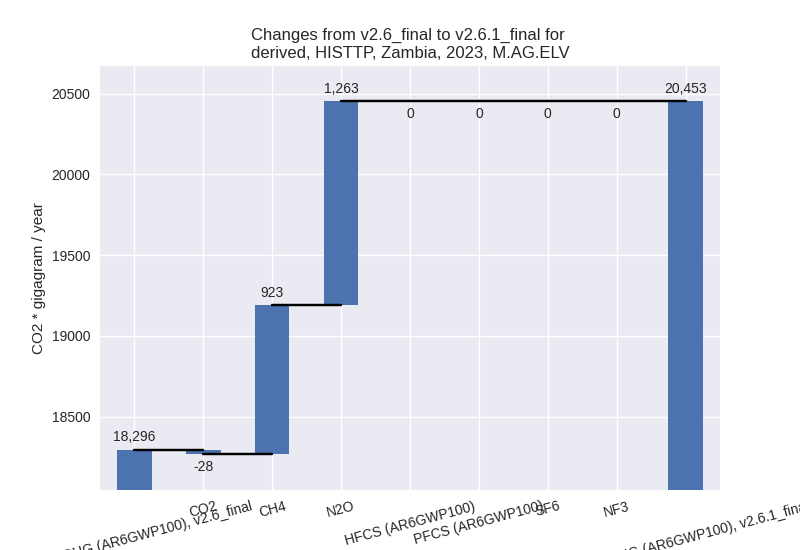
There is no subsector information available in PRIMAP-hist.
- 3.A: Total sectoral emissions in 2022 are 5295.19
Gg CO2 / year which is 20.8% of category M.AG emissions. 2023 Emissions
have changed by 24.4% (1082.09 Gg
CO2 / year). 1990-2023 Emissions have changed by 2.0% (68.36 Gg CO2 / year). For 2023 the
changes per gas
are:
- 4: Total sectoral emissions in 2022 are 1104.10 Gg
CO2 / year which is 2.6% of M.0.EL emissions. 2023 Emissions have
changed by -63.9% (-2013.09 Gg CO2 /
year). 1990-2023 Emissions have changed by -64.7% (-1281.14 Gg CO2 / year). For 2023
the changes per gas
are:
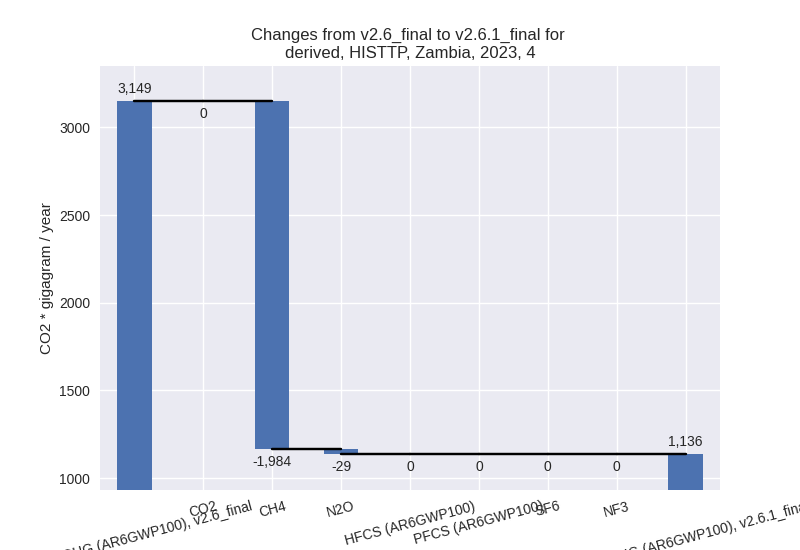
For 1990-2023 the changes per gas are: - 5: Total sectoral emissions in 2022 are 690.75 Gg
CO2 / year which is 1.6% of M.0.EL emissions. 2023 Emissions have
changed by -4.3% (-25.82 Gg CO2 /
year). 1990-2023 Emissions have changed by 1.2% (6.62 Gg CO2 / year). For 2023 the
changes per gas
are: